Legalitas Jelas
Akta, pengesahan, profil pengurus, dan kontak resmi ditampilkan terbuka.

Jejak Dampak Nusantara menjadi jembatan antara donatur, perusahaan, dan masyarakat untuk memajukan pendidikan, kesehatan, dan keberlanjutan di seluruh Indonesia.
Akta, pengesahan, profil pengurus, dan kontak resmi ditampilkan terbuka.
Setiap program memiliki indikator, output, dokumentasi, dan laporan.
Mitra dapat memilih program sesuai isu, wilayah, SDGs, dan target dampak.
Siap dari needs assessment, desain program, implementasi, sampai M&E.
“Setiap aksi kecil meninggalkan jejak dampak yang nyata, terukur, dan berkelanjutan.”
Jejak Dampak Nusantara hadir sebagai jembatan kolaborasi antara donatur, perusahaan, dan masyarakat untuk menciptakan dampak yang dapat dibuktikan.
Baca profil yayasan →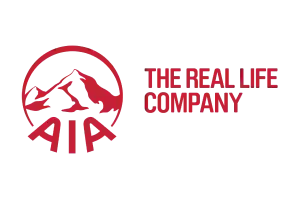
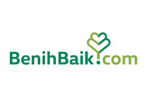
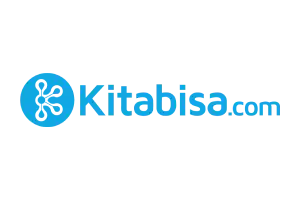
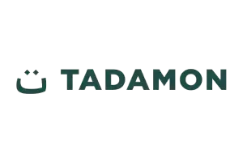
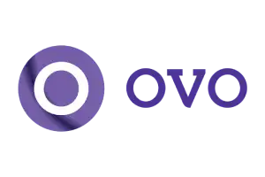
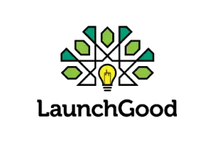
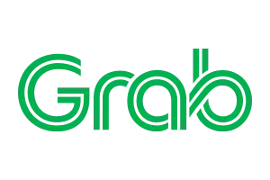
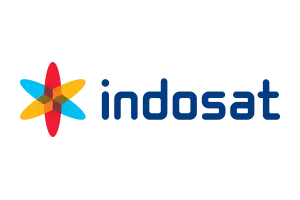
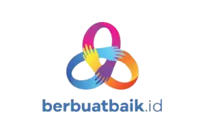
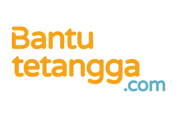
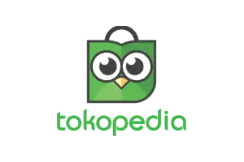
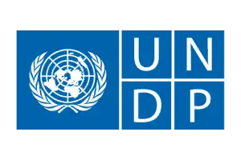
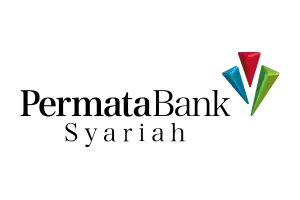
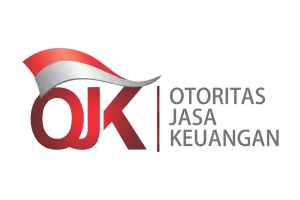
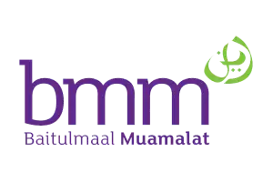
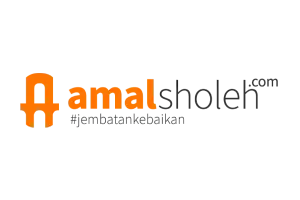
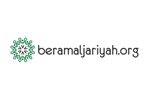
Kelas baca, numerasi, pojok buku, dan pendampingan guru untuk sekolah dasar.
Pendidikan DasarPerangkat belajar digital, pelatihan guru, dan modul pembelajaran offline.
Beasiswa & KarierDukungan biaya sekolah, mentoring, dan kelas persiapan karier untuk siswa rentan.
Beasiswa & KarierPelatihan CV, interview, digital skill dasar, dan mentoring industri.
Kesehatan Ibu AnakRevitalisasi posyandu, alat ukur, pelatihan kader, dan edukasi ibu-anak.
Kesehatan Ibu AnakPemeriksaan berkala, kelas ibu hamil, dan paket nutrisi untuk 1.000 HPK.
Bank program membantu perusahaan memilih inisiatif yang siap dikembangkan menjadi program CSR berdampak.
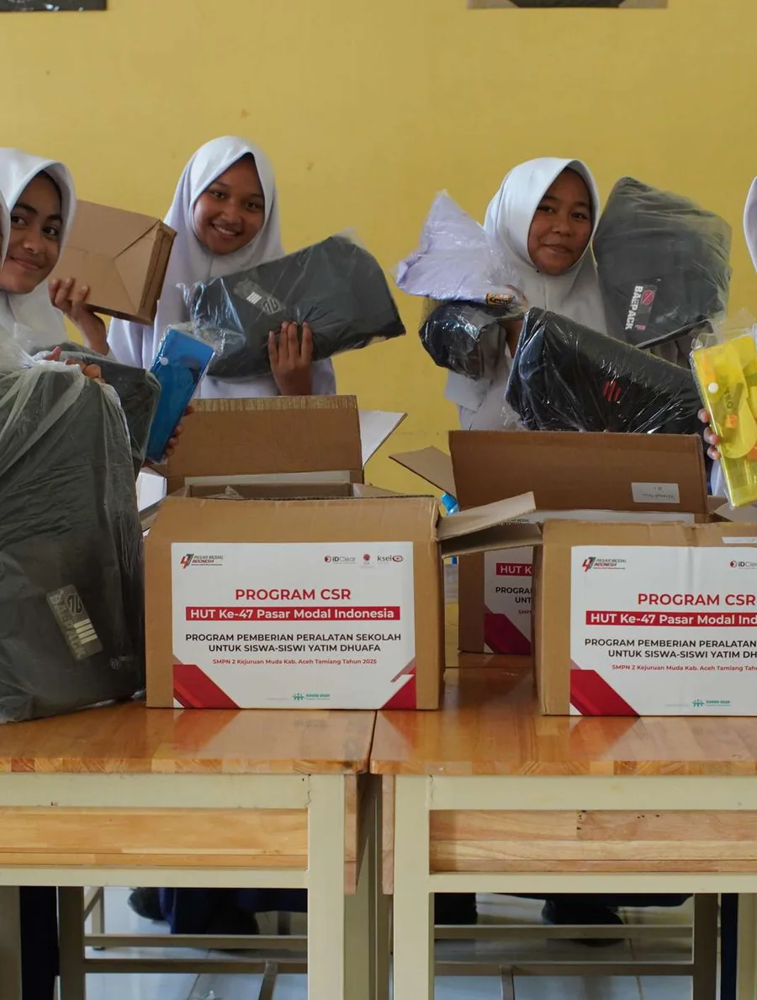
Program gizi sekolah dikembangkan dengan pemantauan status anak, edukasi orang tua, dan pelaporan berkala.
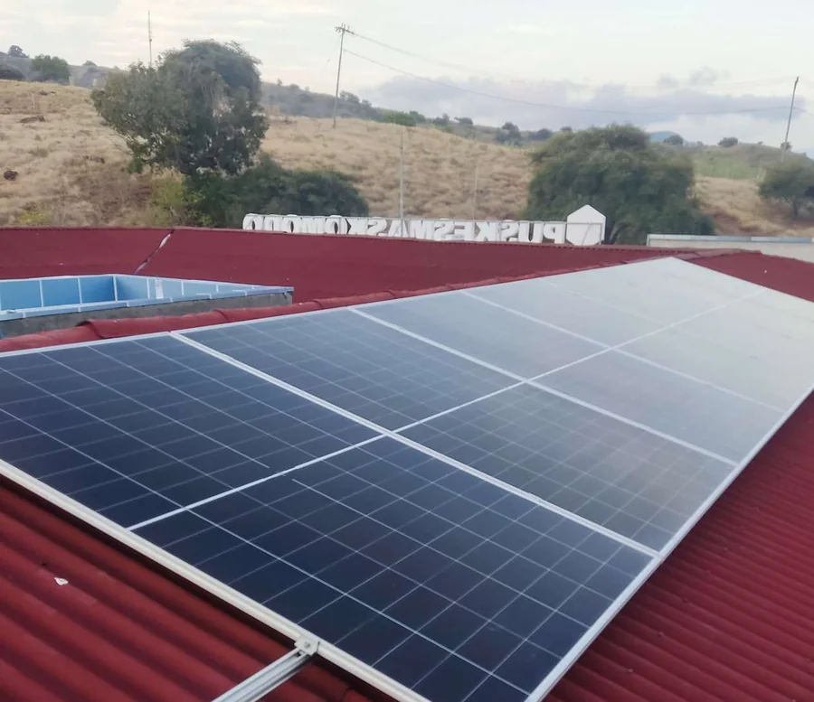
Energi bersih membantu sekolah mempertahankan kegiatan belajar dan operasional dasar di wilayah terbatas listrik.
Pilih program, susun skema CSR, atau mulai campaign donasi yang transparan dan terdokumentasi.